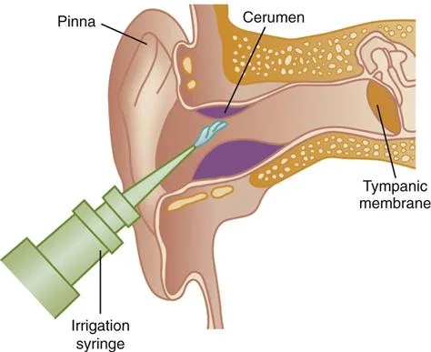
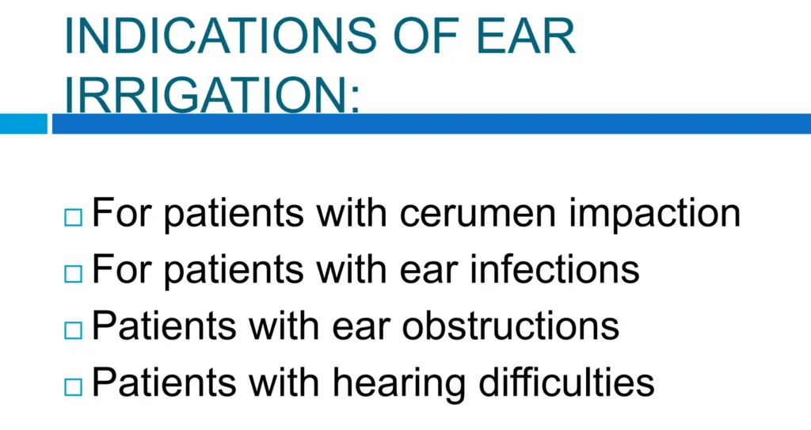
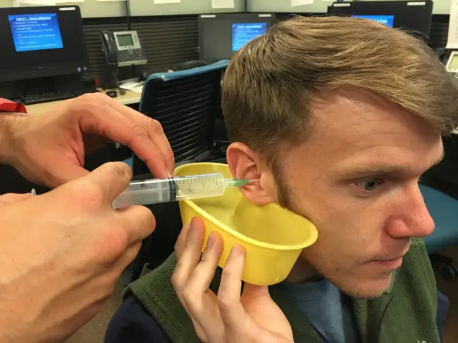

Expanded Nursing Uganda Explanation
Care of the patients’ ears should be understood beyond a short definition. Link the concept to patient history, focused assessment, common risks, nursing priorities, documentation and evaluation of outcomes.
01 EAR IRRIGATION
Ear irrigation is the process of flushing the external ear canal with sterile water or sterile saline .
Ear irrigation is a procedure where a warm, gentle stream of water is used to flush out debris, wax, or other foreign objects from the ear canal . It is the washing of the external auditory canal with a stream of fluid.
Ear syringing , also known as ear lavage , is a similar procedure but uses a larger volume of water and a more forceful stream, delivered through a syringe.
02 Aims /Purposes of Ear Irrigation
- Remove earwax : This is the most common reason for ear irrigation. Accumulated earwax can block the ear canal, leading to hearing loss, discomfort, or even infection.
- Remove foreign objects : Small objects, such as insects or seeds, can become lodged in the ear canal and need to be removed.
- Cleanse the ear canal : Irrigation can help to remove dirt, debris, or other substances that may be present in the ear canal.
03 Indications for Ear Irrigation:
- Earwax impaction : To soften and remove impacted cerumen.
- Foreign body in the ear : Dislodge a foreign body (except hygroscopic substances like ethanol, sodium chloride).
- Otitis externa (swimmer’s ear) : To cleanse the ear canal and remove debris that may be contributing to this infection.
- Chronic otitis media with effusion (glue ear) : To cleanse the ear in case of purulent discharge caused by middle ear infection.
- Preparation for ear surgery: To cleanse the ear canal before certain ear surgeries.
- Prior to hearing tests : To improve the accuracy of hearing tests by removing debris that may interfere with sound transmission.
- Removal of ear mold impressions : To remove a mold impression from the ear canal after an ear impression is taken for hearing aids or other devices.
- Relief of ear pressure : To relieve ear pressure caused by changes in altitude or air pressure.
- To relieve localized inflammation and discomfort : Can be used to reduce inflammation and discomfort in the ear canal.
- For antiseptic effect : Can be used to deliver antiseptic solutions to the ear canal.
- To apply heat or cold : Can be used to apply warm or cold water to the ear canal for therapeutic purposes.
- To evaluate vestibular functions (e.g. bi-thermal caloric test) : Used to assess the function of the balance system in the inner ear.
04 Contraindications of Ear Irrigation
- Perforated Eardrum : A perforated eardrum (a hole in the eardrum) allows water to enter the middle ear, which can lead to infection. Irrigation could further damage the eardrum and worsen the situation.
- Active Ear Infection : An ear infection, especially if it’s acute or severe, can make the ear canal more sensitive and prone to irritation. Irrigation could worsen pain, inflammation, and potentially spread the infection.
- Recent Ear Surgery : The ear canal needs time to heal after surgery. Irrigation could disturb the healing process and potentially lead to complications.
- History of Ear Surgery : Depending on the type of surgery, irrigation may not be safe. For example, if a ventilation tube has been inserted, irrigation could push the tube out of place.
- Excessive Pain or Discomfort : If ear irrigation causes significant pain or discomfort, it should be stopped immediately. This could indicate a problem with the ear canal or a more serious condition.
- Certain Medical Conditions : Conditions like diabetes, immune system disorders, or certain skin conditions could make the ear canal more susceptible to infection after irrigation.
05 Prescribed Solution/Solution that can be used:
- Boric acid 2-4% solution
- Sodium bicarbonate solution 1%
- Normal saline
- Hydrogen peroxide 2%
- Sterile water
Equipment :
Tray:
- Ear Syringe in a Receiver
- Auroscope
- Basin and Vomitus Bowl
- Receiver
- Clean Gloves
- Mackintosh Cape
- Patient’s Towel
- Cotton Swabs
- Prescribed Solution:
- Boric acid 2-4% solution
- Sodium bicarbonate solution 1%
- Normal saline
- Hydrogen peroxide 2%
- Sterile water
- Bowl of warm water for solution temperature regulation
Bedside :
- Adjustable Light and Screen
- Plastic Apron
- Handwashing Equipment
Procedure for ear irrigation
- Explain the procedure to the patient to obtain consent and cooperation
- Provide privacy by screening or closing nearby windows.
- Wash hands,
- Prepare the equipment and bring at bedside.
- Position the patient in sitting up.
- Steps Action Rationale
- 1. Follow general rules of nursing procedures.
- 2. Inspect the auditory canal using the otoscope under good light.
- 3. Ask the patient to sit and tilt the head slightly toward the affected ear. Place the mackintosh and towel over the shoulder and upper arm, under the affected ear. Place the curved part of the receiver below the tilted ear.
- 4. Request the patient to support the receiver under the ear.
- 5. Clean the auricle and meatus of the auditory canal with cotton wool swabs moistened with the solution.
- 6. Fill the bulb syringe with irrigating solution. If an irrigating container is used, allow air to escape from tubing. Air forced into the ear canal is noisy and therefore unpleasant for the patient.
- 7. Straighten the auditory canal by pulling the auricle down and back for the child and up and back for an adult. To straighten the auditory canal so that the solution can flow the entire length of the canal.
- 8. Insert the tip of the syringe gently; direct a steady slow stream of solution against the roof of the auditory canal, using sufficient force to remove the secretions. Gentleness aids in preventing injury to the tympanic membrane. Continuous in and out flow of the irrigating solution prevents pressure in the canal.
- 9. Observe the patient throughout syringing. To detect complications and be ready to act.
- 10. When the irrigation is completed, place a cotton ball loosely in the auditory meatus and request the patient to lie on the affected ear on a towel or absorbent pad. Cotton ball absorbs fluid while gravity allows remaining fluid in the canal to escape from the ear.
- 11. Dry the patient’s auricle and remove the patient’s towel and mackintosh cape.
- 12. Wash hands.
- 13. Document the procedure, appearance of discharge and patient’s response.
- 14. Clear away.
- 15. Decontaminate items used in the procedure.
- 16. Return in 10 to 15 minutes and remove the cotton ball and review the patient. To detect pain that may indicate injury to the tympanic.
06 Nursing Uganda Clinical Lens
Use Care of the patients’ ears as a practical nursing topic, not only a memorized definition. Turn the topic into practical nursing knowledge: meaning, assessment, care priorities, teaching and evaluation.
- What to understand first: define care of the patients’ ears, identify the normal or expected pattern, then explain what changes when the patient is unwell.
- Why it matters in care: the nurse must recognize risk early, explain findings clearly, document accurately and know when to escalate.
- How to revise it: connect each point to assessment, nursing diagnosis or care problem, intervention, rationale and evaluation.
07 Assessment Guide
- Key definitions, patient history, focused observations and risk factors.
- Findings that are normal, abnormal or urgent.
- Resources, referral needs and documentation requirements.
08 Nursing Priorities, Rationales and Outcomes
- Protect safety, comfort, dignity and infection prevention.
- Provide clear care, education and escalation when needed.
- Evaluate response and record what changed.
The rationale for these priorities is patient safety: nursing actions should prevent deterioration, reduce discomfort, support recovery and create clear evidence for the next caregiver.
- Expected outcome: The topic is understood in a way that supports safe nursing judgement and revision.
09 Patient Teaching and Revision Check
- Explain care of the patients’ ears in simple language the patient or caregiver can repeat back.
- Teach warning signs, medicine or follow-up instructions, hygiene or lifestyle points where relevant.
- For exams, prepare a short answer using: definition, causes or risk factors, signs, assessment, management, complications and prevention.
- For ward practice, document baseline findings, actions taken, patient response and the plan for review.
Illustrations and Diagrams (3)



Related Video Lectures
Watch nursing lecture videos on YouTube for this topic. Opens in a new tab.
Watch on YouTubeExternal link: YouTube may use its own cookies and terms. Nursing Uganda is not affiliated with YouTube.